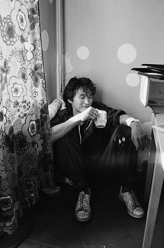
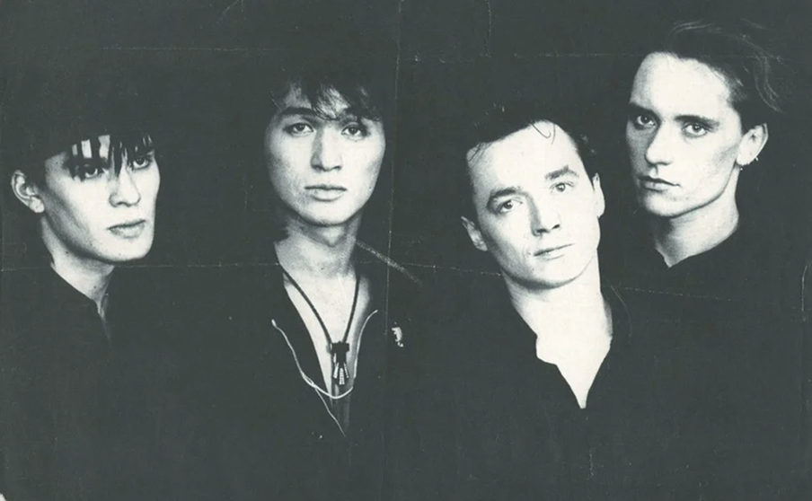
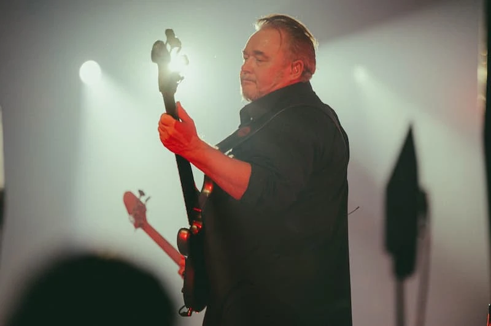
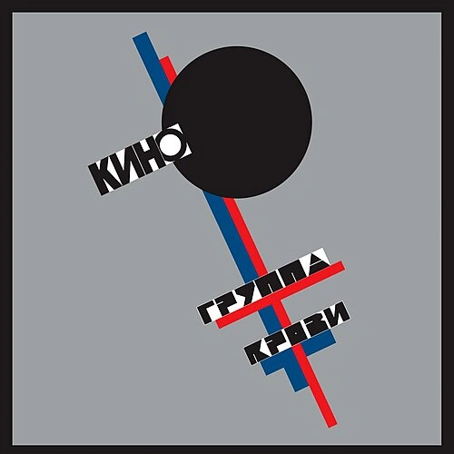
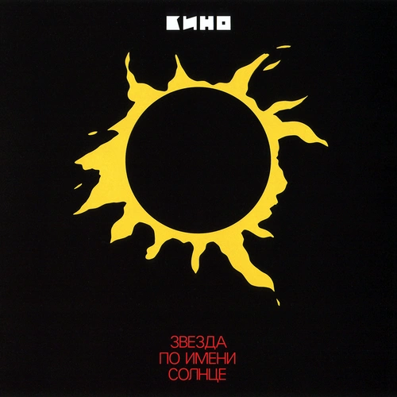
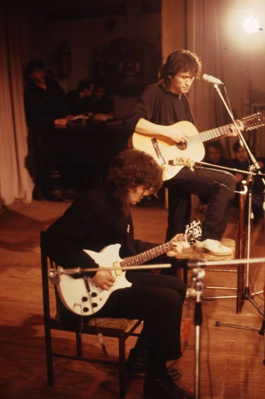

Виктор Цой
Вокал, гитара

Простые слова, узнаваемый звук и песни о том, что близко каждому: свободе, выборе и желании перемен.
Музыку «Кино» продолжают открывать новые слушатели — и находить в ней себя.

Вокал, гитара
Гитара
Ударные

Бас-гитара

11 композиций
Энергия, которую узнаёшь с первых нот.
Группа «Кино»
Название дебютного альбома связано с общей длительностью его песен — около 45 минут. Альбом вышел в 1982 году.
Сначала группа называлась «Гарин и гиперболоиды». Короткое название «Кино» появилось в 1982 году.
Виктор Цой сыграл главного героя Моро в фильме Рашида Нугманова «Игла». В картине звучит музыка «Кино».
Группа «Кино»
Виктор Цой

Музыка между кадрами